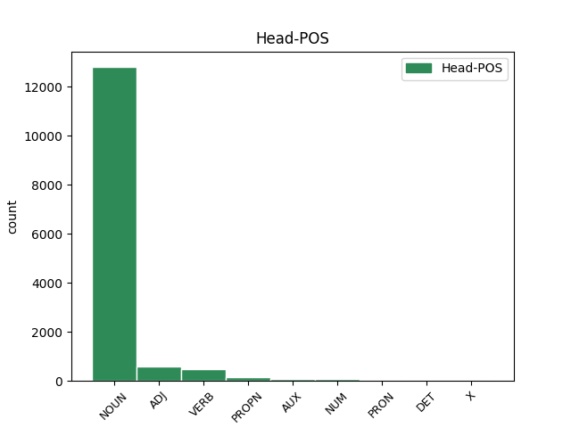

Distribution of features within this leaf

Agreement Rules sorted by frequency.
When the dependent token is None
1 No _ _ _ _ 0 _ _ _
2 arheoloģiskiem _ _ _ _ 0 _ _ _
3 izrakumiem _ _ _ _ 0 _ _ _
4 gan _ _ _ _ 0 _ _ _
5 redzams _ _ _ _ 0 _ _ _
6 , _ _ _ _ 0 _ _ _
7 ka _ _ _ _ 0 _ _ _
8 liela _ _ _ _ 0 _ _ _
9 dzimstība _ _ _ _ 0 _ _ _
10 neapstiprinās _ _ _ _ 0 _ _ _
11 ( _ _ _ _ 0 _ _ _
12 spriežot _ _ _ _ 0 _ _ _
13 pēc _ _ _ _ 0 _ _ _
14 māju _ _ _ _ 0 _ _ _
15 lieluma _ _ _ _ 0 _ _ _
16 ) _ _ _ _ 0 _ _ _
17 , _ _ _ _ 0 _ _ _
18 jo _ _ _ _ 0 _ _ _
19 liels liels ADJ afmsnnp Case=Nom|Definite=Ind|Degree=Pos|Gender=Masc|Number=Sing 21 mod _ LvtbNodeId=a-z99-p67s5w19
20 iedzīvotāju _ _ _ _ 0 _ _ _
21 skaita skaits NOUN ncmsg1 Case=Gen|Gender=Masc|Number=Sing 0 _ _ _
22 pieaugums _ _ _ _ 0 _ _ _
23 līdzinātos _ _ _ _ 0 _ _ _
24 Āzijas _ _ _ _ 0 _ _ _
25 dzimstības _ _ _ _ 0 _ _ _
26 sprādzienam _ _ _ _ 0 _ _ _
27 . _ _ _ _ 0 _ _ _
When the dependent token is None
1 Iespējams _ _ _ _ 0 _ _ _
2 , _ _ _ _ 0 _ _ _
3 ka _ _ _ _ 0 _ _ _
4 pazemība _ _ _ _ 0 _ _ _
5 senajā _ _ _ _ 0 _ _ _
6 Izraēlā _ _ _ _ 0 _ _ _
7 tika _ _ _ _ 0 _ _ _
8 pārņemta _ _ _ _ 0 _ _ _
9 kā _ _ _ _ 0 _ _ _
10 ierēdņu _ _ _ _ 0 _ _ _
11 tikums _ _ _ _ 0 _ _ _
12 no _ _ _ _ 0 _ _ _
13 apkārtējām _ _ _ _ 0 _ _ _
14 kultūrām _ _ _ _ 0 _ _ _
15 , _ _ _ _ 0 _ _ _
16 kas _ _ _ _ 0 _ _ _
17 tika _ _ _ _ 0 _ _ _
18 piemērota _ _ _ _ 0 _ _ _
19 Jahves _ _ _ _ 0 _ _ _
20 reliģijai _ _ _ _ 0 _ _ _
21 ( _ _ _ _ 0 _ _ _
22 Jahve _ _ _ _ 0 _ _ _
23 ienīst _ _ _ _ 0 _ _ _
24 visus viss DET pg0mpan Case=Acc|Gender=Masc|Number=Plur|PronType=Tot 25 det _ LvtbNodeId=a-z99-p160s2w24
25 augstprātīgos augstprātīgs ADJ afmpayp Case=Acc|Definite=Def|Degree=Pos|Gender=Masc|Number=Plur 0 _ _ _
26 un _ _ _ _ 0 _ _ _
27 lepnos _ _ _ _ 0 _ _ _
28 ) _ _ _ _ 0 _ _ _
29 . _ _ _ _ 0 _ _ _
When the dependent token is None
1 Minētais minēt VERB vmnpdmsnpsypn Aspect=Perf|Case=Nom|Definite=Def|Degree=Pos|Gender=Masc|Number=Sing|Polarity=Pos|Tense=Past|VerbForm=Part|Voice=Pass 3 mod _ LvtbNodeId=a-z99-p67s4w1
2 bērnu _ _ _ _ 0 _ _ _
3 skaits skaits NOUN ncmsn1 Case=Nom|Gender=Masc|Number=Sing 0 _ _ _
4 parasti _ _ _ _ 0 _ _ _
5 svārstās _ _ _ _ 0 _ _ _
6 starp _ _ _ _ 0 _ _ _
7 2 _ _ _ _ 0 _ _ _
8 līdz _ _ _ _ 0 _ _ _
9 5 _ _ _ _ 0 _ _ _
10 . _ _ _ _ 0 _ _ _
When the dependent token is None
1 Jāatzīmē _ _ _ _ 0 _ _ _
2 arī _ _ _ _ 0 _ _ _
3 , _ _ _ _ 0 _ _ _
4 ka _ _ _ _ 0 _ _ _
5 jauniešu _ _ _ _ 0 _ _ _
6 nosūtīšana _ _ _ _ 0 _ _ _
7 lauku _ _ _ _ 0 _ _ _
8 darbos _ _ _ _ 0 _ _ _
9 nebija _ _ _ _ 0 _ _ _
10 izolējošs _ _ _ _ 0 _ _ _
11 pasākums _ _ _ _ 0 _ _ _
12 , _ _ _ _ 0 _ _ _
13 kas _ _ _ _ 0 _ _ _
14 uz _ _ _ _ 0 _ _ _
15 trīs trīs NUM mcsmpd Case=Dat|Gender=Masc|Number=Plur|NumType=Card 16 mod _ LvtbNodeId=a-z90-p175s3w15
16 mēnešiem mēnesis NOUN ncmpd2 Case=Dat|Gender=Masc|Number=Plur 0 _ _ _
17 izrauj _ _ _ _ 0 _ _ _
18 to _ _ _ _ 0 _ _ _
19 no _ _ _ _ 0 _ _ _
20 sabiedrības _ _ _ _ 0 _ _ _
21 . _ _ _ _ 0 _ _ _
When the dependent token is None
1 Intervijas _ _ _ _ 0 _ _ _
2 tika _ _ _ _ 0 _ _ _
3 veiktas _ _ _ _ 0 _ _ _
4 bijušajos būt AUX vcnpdmplasypn Aspect=Perf|Case=Loc|Definite=Def|Degree=Pos|Gender=Masc|Number=Plur|Polarity=Pos|Tense=Past|VerbForm=Part|Voice=Act 41 mod _ LvtbNodeId=a-z89-p27s1w4
5 ( _ _ _ _ 0 _ _ _
6 līdz _ _ _ _ 0 _ _ _
7 2010. _ _ _ _ 0 _ _ _
8 gadam _ _ _ _ 0 _ _ _
9 ) _ _ _ _ 0 _ _ _
10 Alūksnes _ _ _ _ 0 _ _ _
11 , _ _ _ _ 0 _ _ _
12 Balvu _ _ _ _ 0 _ _ _
13 , _ _ _ _ 0 _ _ _
14 Bauskas _ _ _ _ 0 _ _ _
15 , _ _ _ _ 0 _ _ _
16 Cēsu _ _ _ _ 0 _ _ _
17 , _ _ _ _ 0 _ _ _
18 Daugavpils _ _ _ _ 0 _ _ _
19 , _ _ _ _ 0 _ _ _
20 Jēkabpils _ _ _ _ 0 _ _ _
21 , _ _ _ _ 0 _ _ _
22 Krāslava _ _ _ _ 0 _ _ _
23 , _ _ _ _ 0 _ _ _
24 Limbaņu _ _ _ _ 0 _ _ _
25 , _ _ _ _ 0 _ _ _
26 Ludzas _ _ _ _ 0 _ _ _
27 , _ _ _ _ 0 _ _ _
28 Madonas _ _ _ _ 0 _ _ _
29 , _ _ _ _ 0 _ _ _
30 Rīgas _ _ _ _ 0 _ _ _
31 , _ _ _ _ 0 _ _ _
32 Saldus _ _ _ _ 0 _ _ _
33 , _ _ _ _ 0 _ _ _
34 Talsu _ _ _ _ 0 _ _ _
35 , _ _ _ _ 0 _ _ _
36 Valmieras _ _ _ _ 0 _ _ _
37 , _ _ _ _ 0 _ _ _
38 Valkas _ _ _ _ 0 _ _ _
39 , _ _ _ _ 0 _ _ _
40 Ventspils _ _ _ _ 0 _ _ _
41 rajonos rajons NOUN ncmpl1 Case=Loc|Gender=Masc|Number=Plur 0 _ _ _
42 . _ _ _ _ 0 _ _ _
Disagree Examples:
1 Hēra _ _ _ _ 0 _ _ _
2 valda _ _ _ _ 0 _ _ _
3 augstajā augsts ADJ affslyp Case=Loc|Definite=Def|Degree=Pos|Gender=Fem|Number=Sing 4 mod _ LvtbNodeId=a-c15-p10s1w3
4 Olimpā Olimps PROPN npmsl1 Case=Loc|Gender=Masc|Number=Sing 0 _ _ _
5 . _ _ _ _ 0 _ _ _
1 Majestātiska _ _ _ _ 0 _ _ _
2 savā _ _ _ _ 0 _ _ _
3 garajā garš ADJ affslyp Case=Loc|Definite=Def|Degree=Pos|Gender=Fem|Number=Sing 9 mod _ LvtbNodeId=a-c15-p10s4w3|SpaceAfter=No
4 , _ _ _ _ 0 _ _ _
5 krāšņajā _ _ _ _ 0 _ _ _
6 pašas _ _ _ _ 0 _ _ _
7 Atēnas _ _ _ _ 0 _ _ _
8 austajā _ _ _ _ 0 _ _ _
9 tērpā tērps NOUN ncmsl1 Case=Loc|Gender=Masc|Number=Sing 0 _ _ _
10 , _ _ _ _ 0 _ _ _
11 viņa _ _ _ _ 0 _ _ _
12 brauc _ _ _ _ 0 _ _ _
13 lejup _ _ _ _ 0 _ _ _
14 no _ _ _ _ 0 _ _ _
15 Olimpa _ _ _ _ 0 _ _ _
16 ratos _ _ _ _ 0 _ _ _
17 , _ _ _ _ 0 _ _ _
18 kuros _ _ _ _ 0 _ _ _
19 ir _ _ _ _ 0 _ _ _
20 iejūgti _ _ _ _ 0 _ _ _
21 2 _ _ _ _ 0 _ _ _
22 nemirstīgi _ _ _ _ 0 _ _ _
23 zirgi _ _ _ _ 0 _ _ _
24 . _ _ _ _ 0 _ _ _
1 No _ _ _ _ 0 _ _ _
2 tīra _ _ _ _ 0 _ _ _
3 sudraba _ _ _ _ 0 _ _ _
4 ir _ _ _ _ 0 _ _ _
5 rati _ _ _ _ 0 _ _ _
6 , _ _ _ _ 0 _ _ _
7 no _ _ _ _ 0 _ _ _
8 tīra tīrs ADJ affsgnp Case=Gen|Definite=Ind|Degree=Pos|Gender=Fem|Number=Sing 9 mod _ LvtbNodeId=a-c15-p10s5w8
9 zelta zelts NOUN ncmvg1 Case=Gen|Gender=Masc|Number=Coll 0 _ _ _
10 ir _ _ _ _ 0 _ _ _
11 riteņi _ _ _ _ 0 _ _ _
12 , _ _ _ _ 0 _ _ _
13 bet _ _ _ _ 0 _ _ _
14 riteņu _ _ _ _ 0 _ _ _
15 spieķi _ _ _ _ 0 _ _ _
16 mirdz _ _ _ _ 0 _ _ _
17 varā _ _ _ _ 0 _ _ _
18 kalti _ _ _ _ 0 _ _ _
19 . _ _ _ _ 0 _ _ _
1 Sena _ _ _ _ 0 _ _ _
2 ķīniešu _ _ _ _ 0 _ _ _
3 leģenda _ _ _ _ 0 _ _ _
4 vēsta _ _ _ _ 0 _ _ _
5 , _ _ _ _ 0 _ _ _
6 ka _ _ _ _ 0 _ _ _
7 pirms _ _ _ _ 0 _ _ _
8 pieciem _ _ _ _ 0 _ _ _
9 tūkstošiem _ _ _ _ 0 _ _ _
10 gadu _ _ _ _ 0 _ _ _
11 leģendārais _ _ _ _ 0 _ _ _
12 Ķīnas _ _ _ _ 0 _ _ _
13 imperators _ _ _ _ 0 _ _ _
14 Šennongs _ _ _ _ 0 _ _ _
15 nobaudījis _ _ _ _ 0 _ _ _
16 pasaulē _ _ _ _ 0 _ _ _
17 pirmo pirmais ADJ mosmsa Case=Acc|Definite=Def|Degree=Pos|Gender=Masc|Number=Sing|NumType=Ord 19 mod _ LvtbNodeId=a-c2-p4s1w17
18 tējas _ _ _ _ 0 _ _ _
19 malku malka NOUN ncfsa4 Case=Acc|Gender=Fem|Number=Sing 0 _ _ _
20 . _ _ _ _ 0 _ _ _
1 Pēdējā _ _ _ _ 0 _ _ _
2 zīmīgā zīmīgs ADJ afmsgyp Case=Gen|Definite=Def|Degree=Pos|Gender=Masc|Number=Sing 4 mod _ LvtbNodeId=a-c21-p20s1w2
3 bita _ _ _ _ 0 _ _ _
4 metode metode NOUN ncfsn5 Case=Nom|Gender=Fem|Number=Sing 0 _ _ _
5 ir _ _ _ _ 0 _ _ _
6 viena _ _ _ _ 0 _ _ _
7 no _ _ _ _ 0 _ _ _
8 pazīstamākajām _ _ _ _ 0 _ _ _
9 datorsteganogrāfijas _ _ _ _ 0 _ _ _
10 metodēm _ _ _ _ 0 _ _ _
11 . _ _ _ _ 0 _ _ _